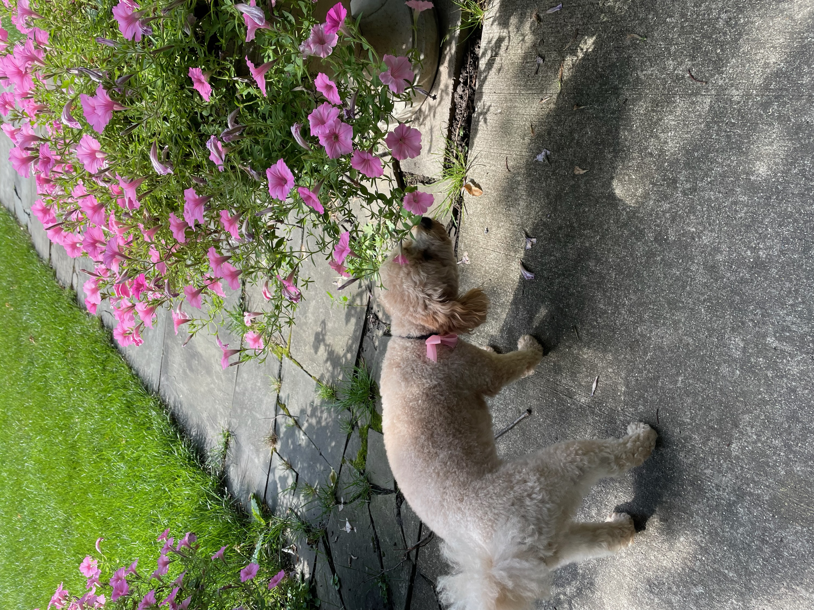
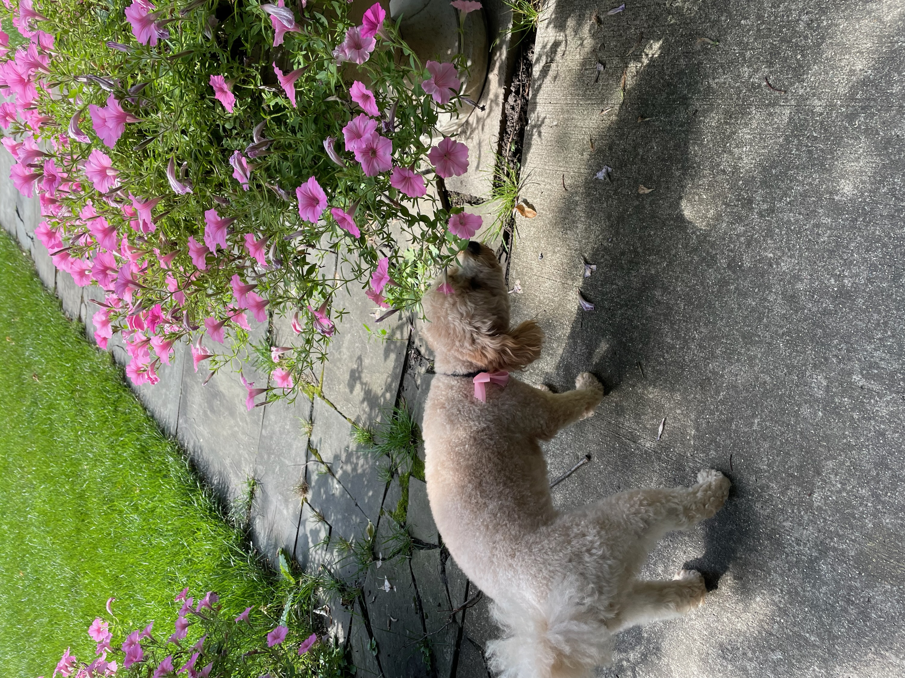
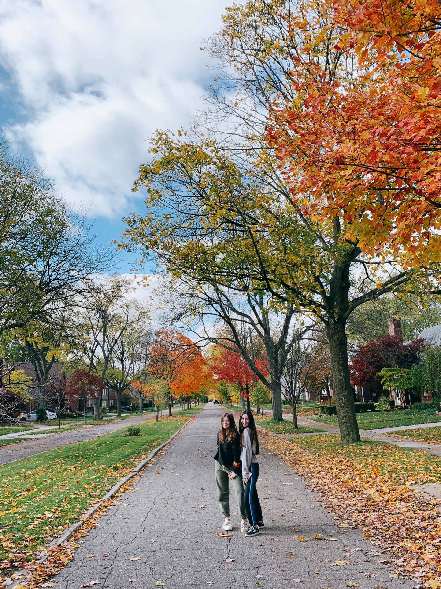
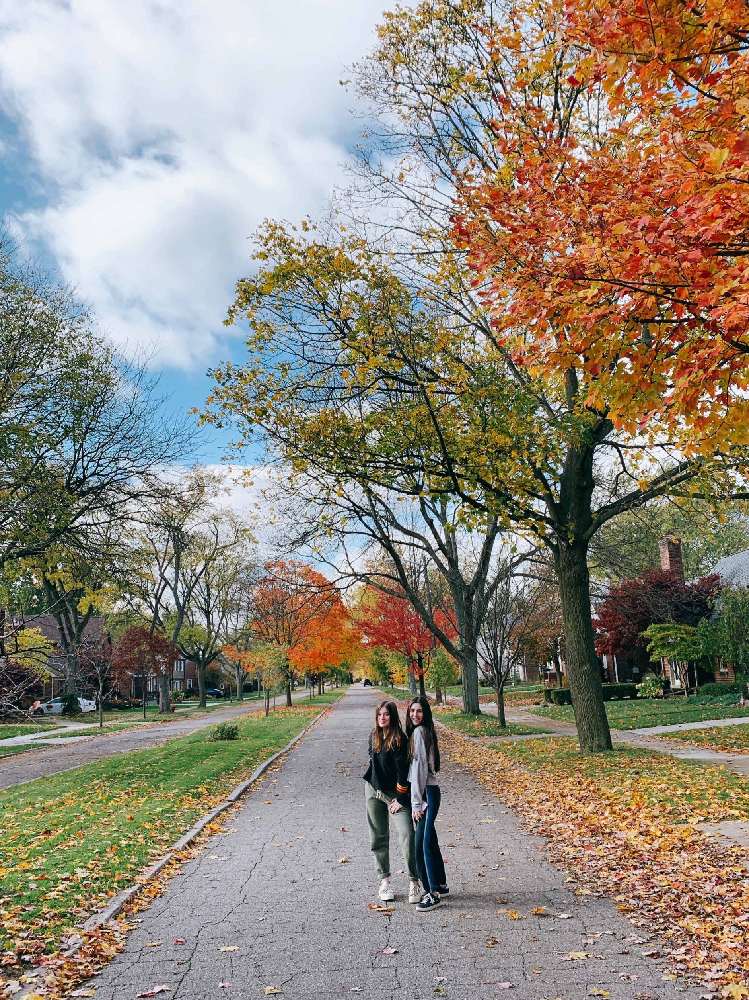
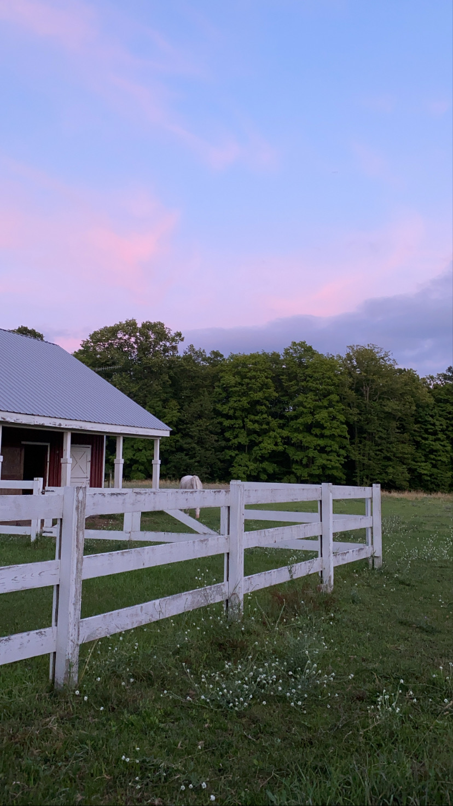
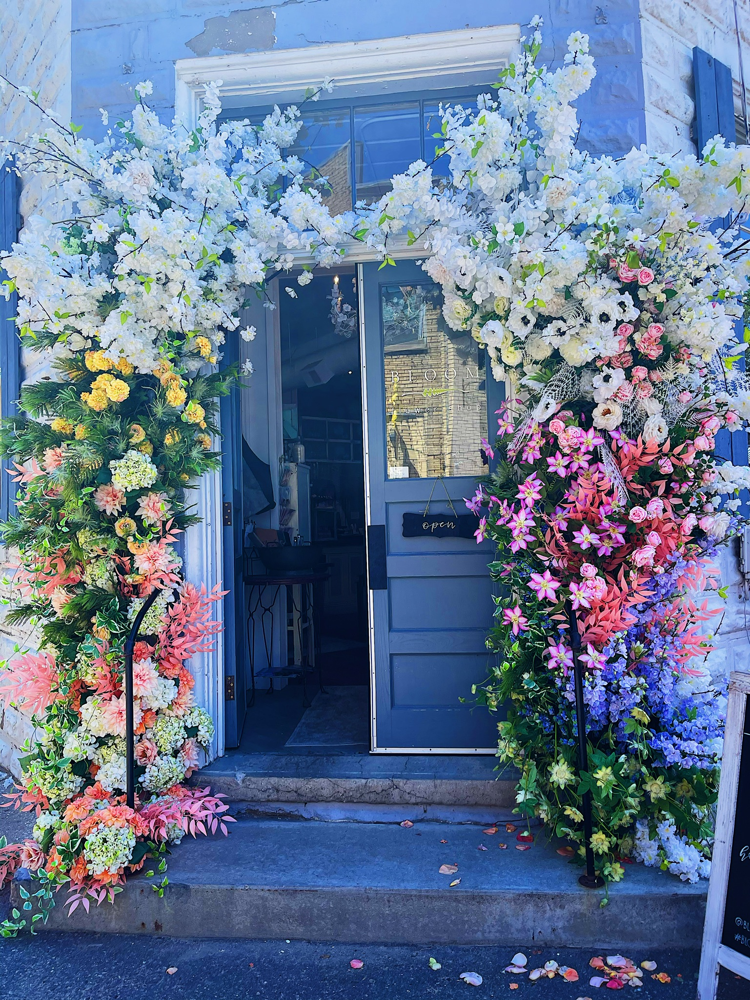
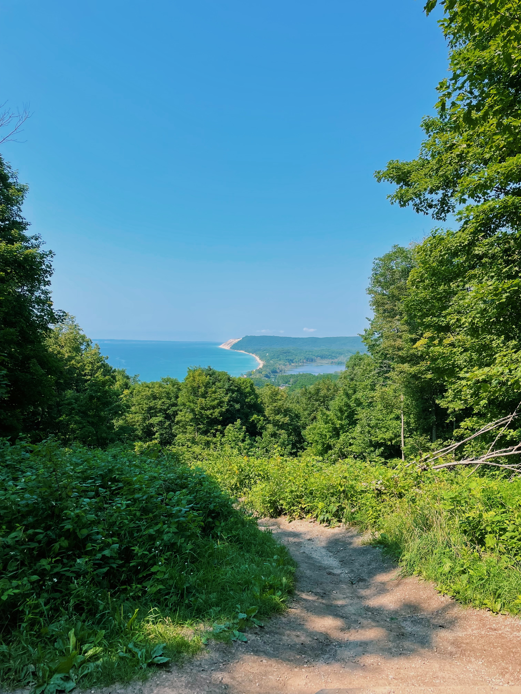
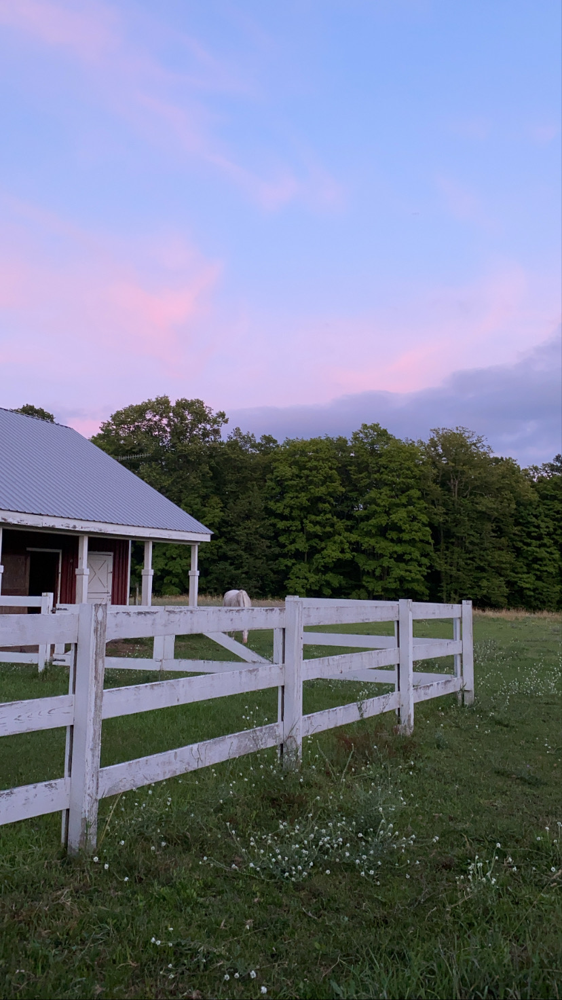
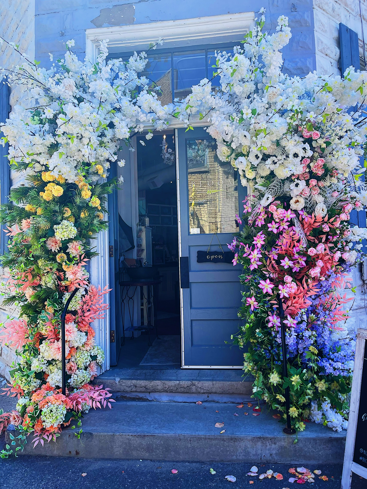
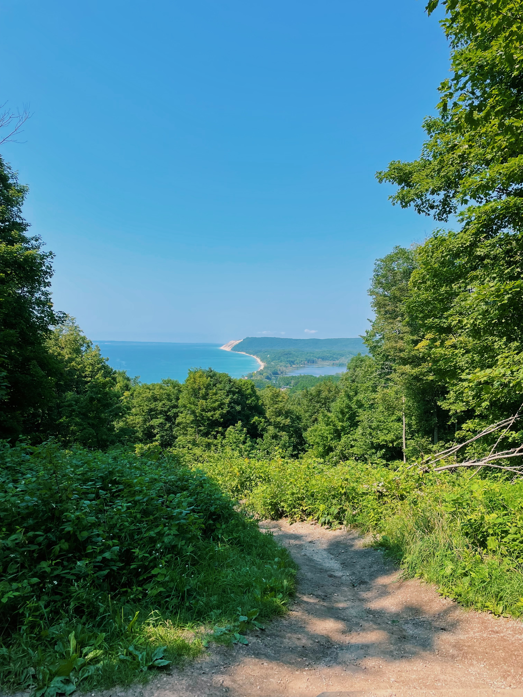

Huntington Woods
Huntington Woods is my hometown where I grew up. It is a tiny square mile town only hosts 6,000 residents. The only buildings in it besdies homes, is a library and an elementary school. It is my favorite place. I made the best friends, had great education, and will always have somewhere to come back to. Generations of my family have lived in Huntington Woods beginning with my great grandparents. I plan on continuing the tradition and starting a family there.
 


 


Up North
Up north is a magical place. It is my home away from home. I have gone to summer camp there for nine years and have gone up there every summer since with friends are family. There are many gorgeous hiking trails, orchards and farms for fruit picking, and many Great Lakes and beautiful waters and beaches. Northern Michigan holds a special place in my heart.
 




